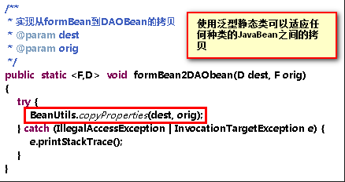
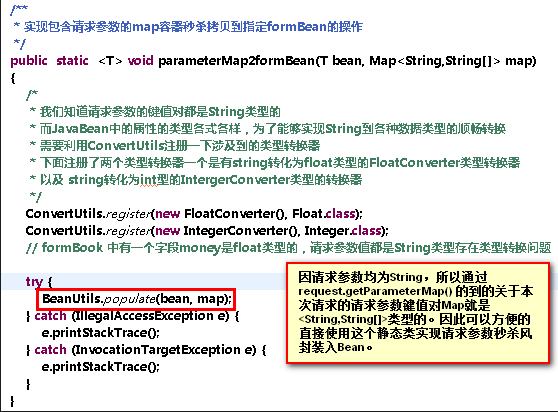

BeanUtils是由阿帕奇开发的开源框架，目的是当你使用JavaWeb开发Web应用的时候可以方便的实现JavaBean与JavaBean以及容器（特别是Map容器）与JavaBean之间同名属性之间的数据定向拷贝。
之所以会存在两个相似（多个属性名甚至属性类型相同）BEAN之间的数据拷贝就是因为这两个BEAN分别服务于不同的分层架构，例如前端用于向前端表单回显数据（使用EL表达式从存放在四个作用域之一的FormBean中获取）的FormBean的数据来源就是在service层验证如果通过就直接提交给DAO层进行数据库交换的DAOBean。通常之前的数据提交会通过BeanUtils.populate()直接拷贝到了DAObean然后才交给service进行数据格式合法性的验证，当然这个过程可以有很多中操作方式，例如你当然可以先验证数据如果数据全部合法才着手封装到DAOBean中否则就直接封装到FormBean中并将问题信息也一并封装后回传给JSP页面进行数据回显，这样就省去了Bean到Bean的拷贝，但是考虑到数据规程行，应该从前端提交来的数据立刻封装为Bean然后提交到Servcie层进行合法性校验，如果出现问题就将需要回显的数据从DAOBean拷贝到FormBean然后再FormBean中写入问题数据后回传给前端进行数据和信息回显，这就就势必会用到Bean到Bean的拷贝。
除了Bean到Bean的拷贝，我刚才还提到了将前端表单数据封装到JavaBean中，这就涉及到了BeanUtils的另一个重要的使用方法，将map容器中数据按照键名与Bean属性名的匹配性进行拷贝。这有点类似于Struts2中通过向值栈中的对象栈栈顶放入一个JavaBean对象，以此将Bean中的属性暴露出来，之后Struts2拦截器会自动将提交过来的表单字段的name与索要访问的Action中的这个Bean所暴露出来的属性名进行比对，同名的就会自动完成向对象栈map容器中填入数据的操作，其实值栈的本质就是一个由对象栈的对象的属性（如果是JavaBean）或者键值对（如果就是map对象）组成的一个map容器在加上map栈这个map容器共同组成的一个大合集map容器，在页面上以及其他Action中只需要知道键名就能够方便的找到对应的值或者是向这个键名下填入值。由此可见整个JavaWeb最常用到的数据类型就是JavaBean以及Map容器类型，而且他们之间有非常类似的性质，也就是属性名对应属性值；键对应值，这种一一对应的特性不仅可以在形式上实现两种数据类型的共同（例如EL表达式不论操作的对象是bean还是map，都可以用${obj.name（属性名或键名）}来得到值）也让Bean和map之间的秒杀拷贝成为可能。

